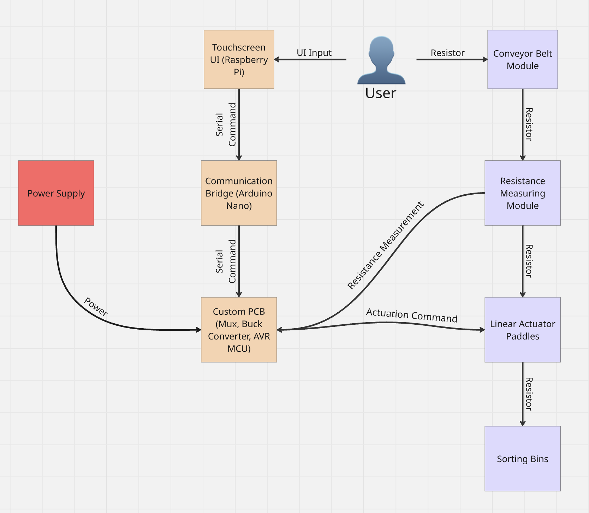

Project Mission

Overview
We present an automated resistor sorter with beehive-inspired aesthetics. The active components of the resistor sorter consist of a modular conveyor belt, a two-pronged resistor probe, linearly-actuated “paddles”, and an array of bins. The resistors are first placed on the conveyor belt for sorting. Each conveyor belt module has an embedded magnet to hold the resistor and conductive copper tape at both ends, which serve as conductive contacts with the resistors. As the conveyor belt moves, each module passes under the two-pronged resistor probe, which comes into contact with the copper tape and enables an electrical measurement across the resistor. Using a set of known voltage dividers, we can determine the resistance based on the voltage across the resistor. The resistor then passes to the underside of the conveyor belt, where the paddles are actuated to knock the resistors of the magnets into their respective bins.
System Diagram
The diagram below depicts the relationships between all of the different subsystems comprising our final system.
Aesthetics
To stylize our resistor sorter like a beehive, we rastered hexagonal patterns to the structure of the machine, added numbered bee stickers to the front of each bin, and added “dripping honey” resin-printed accents. We also added warm LED light strips and made the front panels out of acrylic to show the working systems.